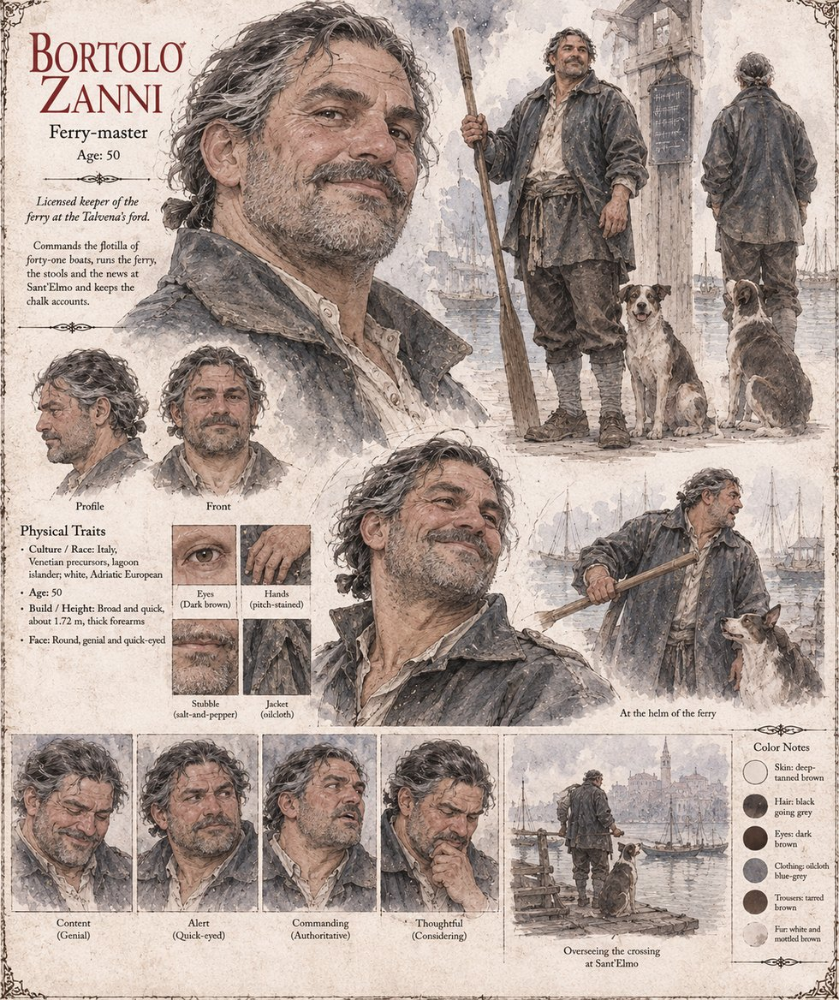

Bortolo Zanni
Ferry-master of the Talvena’s ford · commander of the flotilla of forty-one boats · keeper of the chalk slate · 50 at the start, 54 at the Concord
A broad, quick, affable man of fifty who has worked the Order’s contracts on the lagoon for thirty years and has never been surprised by a passenger, Bortolo Zanni commands the Translation’s flotilla, which is a larger word than the arrangement deserved, having priced forty-one hulls in the Lamp-Hall at Torrelume in the first week of Averin. His boatmen carry the children ashore. On the evening of the ninth day he does not go home but asks the Legate’s clerk for a license to run the ferry at the Talvena’s ford, and six months on he has the license, a ferry-house of tarred planks at Sant’Elmo with a slate hung on its door, four deckhands, three boats, a debt to the clerk that he regards as a form of friendship, and a one-eared mongrel called Soldo. The slate reads Fare by day, two soldi. By dusk, double. By night, by arrangement.
On the fourteenth of Jorren a tall grey foreigner steps off the oil-barge, bows to the dog, overpays by a fourth coin that Bortolo does not touch, and asks at Compline what the valley says. Bortolo tells it all as a series of crossings and does not say he believes it. The man sleeps in the boat-shed and leaves before the cocks, two coins on the thwart for a night Bortolo had not charged; Bortolo writes Unaccounted, and for the first time in thirty years cannot carry the sum. A man who asks nothing is a man for whom there is no price. By the sixth week he has built forty folding stools of river-willow and set them in rows fifteen paces beyond the sexton’s white stones, a half-soldo for the near rows and a quarter for the far, and he sells Agata the brown book that becomes Things Counted. When six of the Company’s men come to the ford he quotes four times his rate, then rows them up to the stones free of charge. At the Concord, fifty-four, he scrapes the chalk accounts off the door and cannot remove the sum beneath, Owed: all.
The manuscript gives his age (fifty at the start, fifty-three at the stones, fifty-four at the Concord), his breadth and quickness and affability, and no height, hair or eye colour. The sheet’s build of about 1.72 m with thick forearms, round genial face, dark brown eyes, salt-and-pepper stubble, hair tied back, blue-grey oilcloth jacket and tarred trousers are its own, as are its panels Content, Alert, Commanding and Thoughtful and its scenes At the helm of the ferry and Overseeing the crossing at Sant’Elmo. Its two dogs, one white and one mottled brown, differ from the manuscript, which gives him one dog, Soldo, a one-eared mongrel. Its italic lines (licensed keeper of the ford; commands the flotilla of forty-one boats, runs the ferry, the stools and the news at Sant’Elmo, keeps the chalk accounts) follow the manuscript.
“A man who asks nothing is a man for whom there is no price.”
Appears In

Related Subjects


Related Records

On the sixth night of the nine-day Translation of Focolare, the moths come out of the reeds on both banks in their hundreds and settle in halos of trembling white about every lantern on the water. Bortolo Zanni, the ferry-master, stands in the stern of the lead boat with one hand on the sweep; Nico and Ilario ride with the flame, and the islanders, who have never been visited at the flame by anything but the flame, stare upward.

On the morning after the Lamp-Host met the Company of the Moonless at the ford of Sant’Elmo, Higaide walks the bank with a spade over his shoulder, counting. Corbelli, who sits on an upturned boat eating a fig, says there are six hundred and forty on this side; Six hundred and forty-one, says Higaide, and points to a small grey shape in the shallows with a lantern burning at the end of its outstretched hand. Bortolo Zanni watches from the ferry-house door with the dog at his heel.